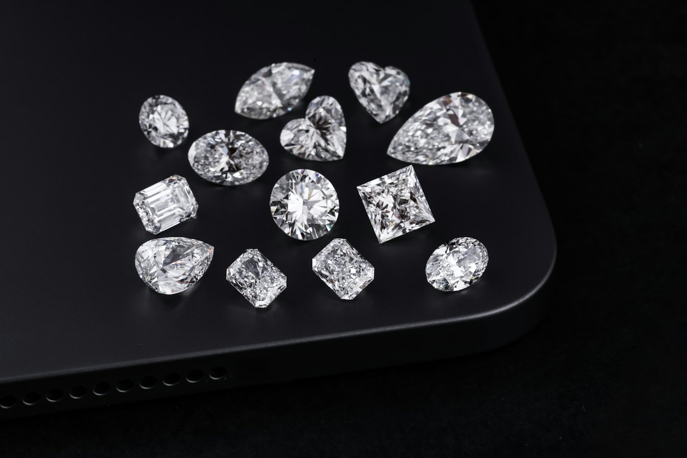

Our story
Starough was founded in Antwerp in March 1980 as a rough diamond trading company.
From rough, we moved into manufacturing, and then into selling small polished sizes under one carat: mostly non-certified rounds, in parcels, for manufacturers and dealers. These stones are the foundation of the jewellery industry. Knowing them inside out set the standard for everything we do.
When the next generation joined, we added GIA-certified stones in all shapes, rounds and fancies. Today our stock runs from small sizes up to around five carats, with select stones close to ten carats.
We have grown through the trust of our clients, and we bring the same care to every stone we sell.
